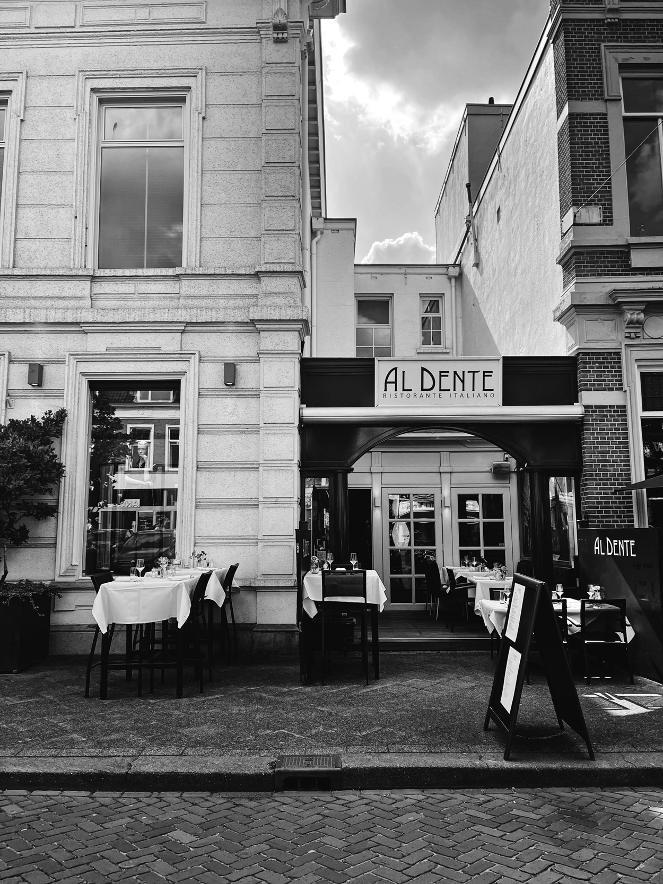
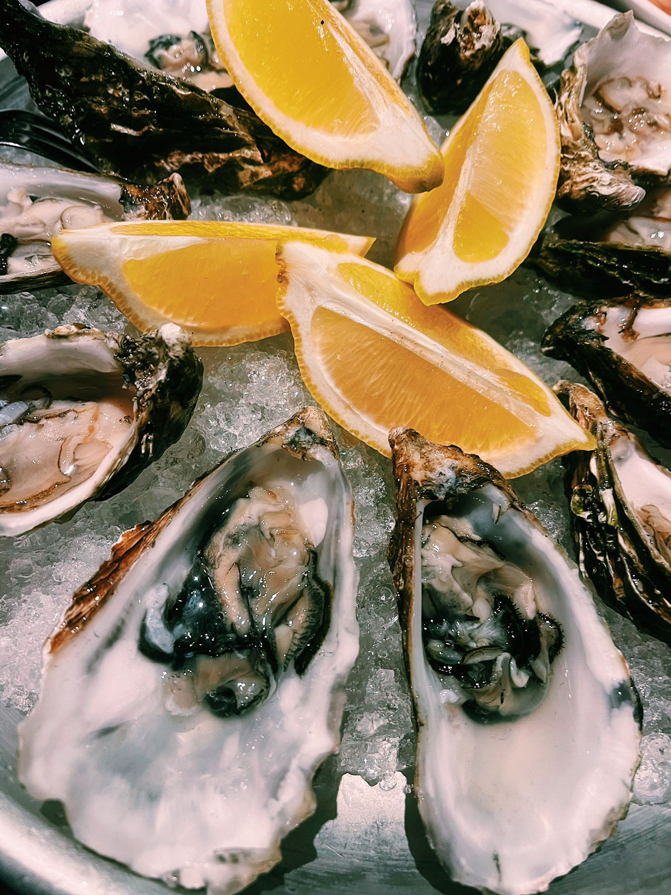
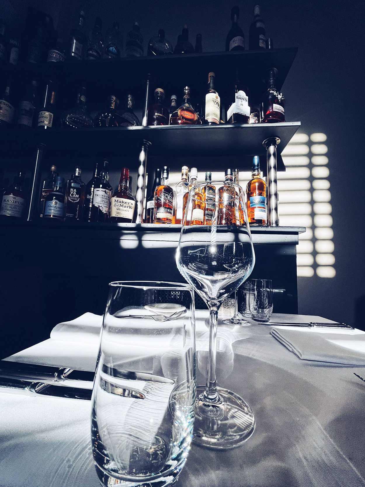

Al Dente
Ristorante Italiano
Witte tafellakens, een goed glas en de Italiaanse keuken, midden in Breda aan de Nieuwe Ginnekenstraat.
- Open
- di t/m za, 12:00 tot 23:00
- Adres
- Nieuwe Ginnekenstraat 20
La carta
De menukaart van het restaurant, gerecht voor gerecht. Prijzen in euro.
Pasta e Basta menu
drie gangen keuzemenu 44,95
Vooraf Bruschetta al pomodoro e una ciotolina di olive (bruschetta, tomaat, bakje olijven) en pane con olio d'oliva (brood, olijfolie)
Voorgerechten
- Vitello tonnato17,95
dun gesneden gepocheerd kalfsvlees, crème van tonijn
- Carpaccio di carne con rucola19,95
ossenhaas-carpaccio, olijfolie, balsamico, rucola, Parmezaanse kaas
- Tagliata di tonno18,95
getrancheerde rauwe tonijn, peperolie
- Insalata con formaggio di capra e fragole16,95
baby spinazie, geitenkaas, aardbei, peperolie, balsamico
Hoofdgerechten
- Pasta del giorno22,95
pasta van de dag
- Taglierini con ragù di carne22,95
dunne lintpasta, saus van tomaat, ui, runder tartaar
- Conchiglie rigate al gorgonzola22,95
deegschelpjes, peer, gorgonzola, rucola, Parmezaanse kaas, walnoot
- Risotto agli scampi23,95
risotto, gepelde garnalen, zeekraal, witte wijn, Parmezaanse kaas
Nagerechten
- Sgroppino11,95
vloeibaar citroenijs, wodka, prosecco
- Tiramisu11,95
mascarpone, Amaretto, cacao
- Caffè affogato8,95
espresso koffie, bolletje vanille roomijs, Amaretto, slagroom
- Ananas di Sorrento12,95
ananas, citroenijs, limoncello, cake, gegratineerd eiwit
Antipasti
voorgerechten
- Tartare di manzo con fegato d'anatra alla griglia21,95
tartaar van ossenhaas, gegrilde groenten, gegrilde eendenlever, balsamico
- Carpaccio di rana pescatrice con astice23,95
carpaccio van zeeduivel, kreeft, venkel, sinaasappel, radijs, kappertjes, olijfolie
- Carpaccio di carne con fegato d'anatra e tartufo23,95
carpaccio van ossenhaas, eendenlever krullen, truffel, rucola, balsamico
- Salmone scottato con salsa olandese22,95
kort aangebraden zalm, hollandaise saus, bieslook, geklaarde boter
- Capesante con salsa alle spugnole22,95
Sint Jacobsschelpen, morieljes, room, gnocchi
- Barbabietola con balsamico16,95
dungesneden bietjes, balsamico, peperolie, gorgonzola, walnoot
- Ravioli alle animelle22,95
gebakken kalfszwezerik, gebakken kalfstong, eendenlever-ravioli, hollandaise saus, truffelsaus
- Scampi Diablo22,95
gebakken scampi, pikante kruidensaus, witte wijn, room
Pasta e risotti
pasta en risotto
- Risotto al tartufo26,95
risotto, truffel, witte wijn, Parmezaanse kaas
- Risotto con gamberi e capesante32,95
risotto, wilde gamba, Sint Jacobsschelpen, zeekraal, witte wijn, Parmezaanse kaas
- Casarecce alla Norma22,95
casarecce, aubergine, tomaat, pepertje
- Spaghetti alle vongole30,95
spaghetti, venusschelpen, witte wijn, peterselie, knoflook, pepertje
- Ravioli salsa rossa22,95
ravioli met ricotta- en spinazievulling, tomaat, room, Parmezaanse kaas
- Rigatoni con spezzatino24,95
rigatoni, gestoofd rundvlees, tomaat
- Spaghetti aglio, olio e gamberi22,95
spaghetti, gebakken gepelde garnalen, knoflook, cherrytomaat, olijfolie, pepertje
- Linguine con crostacei32,95
Sint Jacobsschelpen, vongole, mosselen, scampi, zeekraal, knoflook, cherrytomaat, witte wijn
Secondi
hoofdgerechten
- Branzino alle vongole36,95
gestoomde zeebaars, vongole, venkel, aardappelen
- Rombo alla senape45,95
gegrilde tarbot, mosterdsaus, daggroenten, aardappelen
- Sogliola del Mare del Norddagprijs
gebakken Noordzeetong, groene salade, aardappelen
- Animelle con salsa di spugnole40,95
gebakken zwezerik, morieljessaus, daggroenten, aardappelen
- Carré d'agnello al forno44,95
geroosterde lamscarré, kruidenkorst, lamsjus, daggroenten, aardappelen
- Tagliata di manzo con rucola e parmigiano36,95
getrancheerde ossenhaas, rucola, Parmezaanse kaas, balsamico, aardappelen
- Filetto di manzo Rossini42,95
gegrilde ossenhaas, gegrilde eendenlever, truffelsaus, daggroenten, aardappelen
- Fegato di vitello fritto all'aceto balsamico34,95
gebakken kalfslever, daggroenten, balsamicosaus, aardappelen
Contorni
bijgerechten
- Spaghetti all'aglio6,95
spaghetti, knoflook, Italiaanse kruiden, pepertje
- Insalata verde6,95
mix van groene salade
- Verdure grigliate11,95
gegrilde groenten, koud geserveerd
- Patate fritte4,95
aardappelen in olijfolie gebakken
Il dolce
nagerechten
- Tiramisu11,95
mascarpone, Amaretto, cacao
- Formaggi misti14,95
sortering uit Italiaanse kazen
- Meringa alle fragole12,95
cake, banketbakkersroom, aardbeien, gegratineerd eiwit
- Ananas di Sorrento12,95
ananas, citroenijs, limoncello, cake, gegratineerd eiwit
- Cassata Siciliana11,95
Siciliaans ijstaartje, gekonfijt fruit
- Torta al cioccolato12,95
chocoladecake, gemarineerde kersen, stracciatella-ijs bereidingstijd 20 min
- Sgroppino11,95
vloeibaar citroenijs, wodka, prosecco
- Torta di mele12,95
omgekeerd appeltaartje, walnootijs, ahornsiroop bereidingstijd 20 min
- Tiramisu con le fragole12,95
tiramisu, aardbeien, stracciatella-ijs
- Semifreddo11,95
parfait-ijs
- Tartufo8,95
chocolade-zabaglione roomijs, hazelnoot, cacao
- Caffè affogato8,95
espresso koffie, bolletje vanille roomijs, Amaretto, slagroom
- Caffè Al Dente11,95
koffie of thee naar keuze, kleine tiramisu, puntje likeur
Caffè, tè e digestivo
koffie, thee en digestief
Caffè
- Espresso4,50
kleine sterke koffie
- Caffè lungo4,50
espresso met iets meer water
- Ristretto4,50
extra sterke espresso
- Espresso doppio5,00
dubbele espresso
- Macchiato5,00
espresso met een toefje warm melkschuim
- Cappuccino5,00
caffè lungo, wolkje warme melk, melkschuim
- Latte macchiato5,00
glas caffè, veel hete melk, beetje melkschuim
- Caffè con panna4,50
caffè lungo met slagroom
- Caffè corretto5,50
caffè lungo met een scheutje drank, bijvoorbeeld Sambuca
- Caffè Italia10,50
caffè, basterdsuiker, Amaretto, slagroom
- Spanish coffee10,50
caffè, basterdsuiker, Tia Maria, slagroom
- French coffee10,50
caffè, basterdsuiker, Grand Marnier, room
- Irish coffee10,50
caffè, basterdsuiker, Jameson whisky, room
Tè
- Tè4,50
earl grey, rooibos, zwart, kamille of groen
- Tè fresco5,00
gember, munt, sinaasappel, citroen
Digestivo
- Limoncello7,00
- Frangelico7,00
- Amaretto7,00
- Sambuca7,00
- Grappa al cioccolato7,00
- Diverse likeuren7,00
- Diverse grappavanaf 9,00
Komt u met 6 personen of meer? Dan serveren wij het Menu Classico.




Menu Classico
drie gangen keuzemenu, 59,95 per persoon
Bij gezelschappen vanaf 6 personen krijgt u de keuze uit ons Menu Classico; de à la carte kaart vervalt dan. Om de kwaliteit en beleving voor de hele tafel te kunnen garanderen, is het niet mogelijk om gerechten binnen het menu te wijzigen.
Vooraf Bruschetta al pomodoro e una ciotolina di olive en pane con olio d'oliva
Voorgerechten
- Scampi dello Chef22,95
gebakken gepelde garnalen, knoflook, wittewijnsaus
- Duo22,95
ossenhaas-carpaccio met Parmezaanse kaas, vitello tonnato
- Carpaccio di carne con tartufo22,95
carpaccio van ossenhaas, truffel, olijfolie
- Burrata con verdure grigliate18,95
burrata, gegrilde groenten, cherrytomaat, olijfolie
Hoofdgerechten
- Coda di rospo con capesante36,95
gebakken zeeduivel, Sint Jacobsschelpen, curryragout, aardappelen
- Linguine al tartufo26,95
linguine, room, kaas, truffel, ei
- Filetto di manzo Al Dente38,95
gegrilde ossenhaas met saus naar keuze (peper, truffel of gorgonzola), groenten, aardappel
- Saltimbocca alla Romana36,95
gebakken kalfsoesters, Parmaham, salie, kalfsjus, groenten, aardappel
Nagerechten
Keuze uit de dessertkaart, zie Il dolce.
Reserveren
Reserveren voor in het restaurant kan online. Mocht online reserveren onverhoopt niet lukken, dan kunt u ons natuurlijk een appje sturen of ons bellen.
Wilt u reserveren voor meer dan 4 personen? Neem dan telefonisch contact op of stuur een app.
Lieve groeten,
Corné, Esther en ’t Al Dente Team
Contact & route
Adres
Al Dente
Nieuwe Ginnekenstraat 20
4811 NR Breda
Contact
076 520 43 33
06 23 22 30 70 (WhatsApp)
info@aldentebreda.nl
Openingstijden
| Maandag | gesloten |
|---|---|
| Dinsdag | 12:00 – 23:00 |
| Woensdag | 12:00 – 23:00 |
| Donderdag | 12:00 – 23:00 |
| Vrijdag | 12:00 – 23:00 |
| Zaterdag | 12:00 – 23:00 |
| Zondag | gesloten |
Parkeren
Betaald parkeren voor de deur. Een parkeergarage ligt op korte loopafstand.
Leuke collega’s gezocht in de bediening
Ervaring is natuurlijk fijn, maar eerlijk gezegd vinden wij het veel belangrijker dat je enthousiast bent, plezier hebt in je werk en het leuk vindt om onze gasten een fijne avond te bezorgen. Je hoeft niet alles te kunnen: als je wilt leren, helpen wij je graag.
Ben je 16 jaar of ouder en zoek je een bijbaan in de avonduren of in het weekend? Dan horen wij graag van je. Uren en dagen zijn in overleg.
Stuur ons een appje